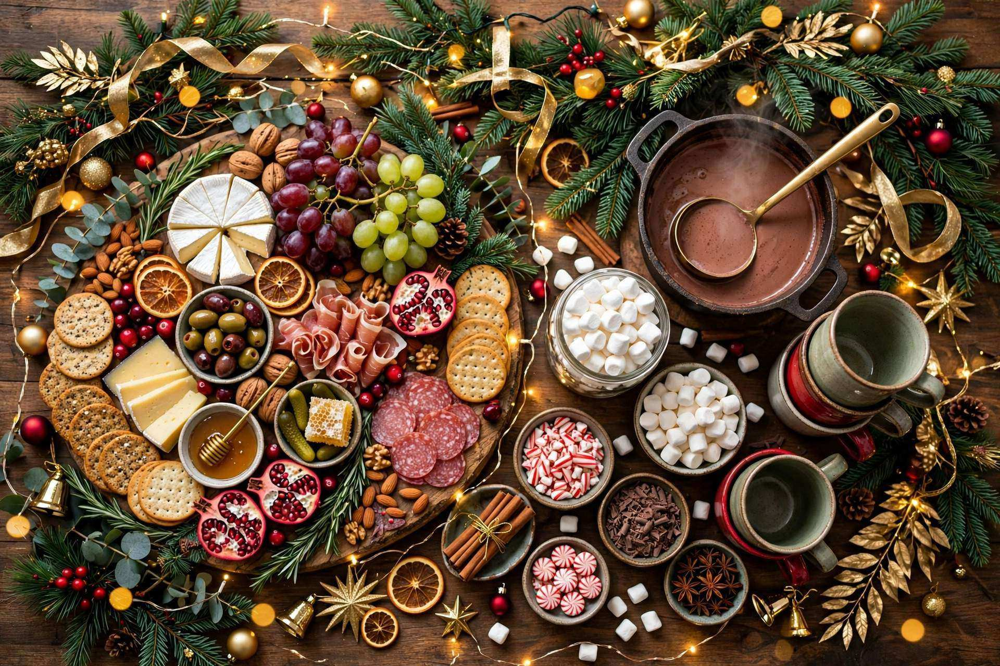

Holiday Parties
Holiday party ideas — cosy Christmas decorations on a budget, easy party food and drink, and a special New Year's Eve at home.
-
Holiday PartiesParty Decorations on a Budget
25 Cozy Christmas Party Decoration Ideas on a Budget
Warm lights, simple greenery and clever reuse — make your home feel festive for a Christmas party without spending a fortune.
-

Holiday PartiesChristmas Party Food20 Easy Christmas Party Food and Drink Ideas Guests Will Love
Grazing boards, slow-cooker mains, make-ahead desserts and a hot-chocolate bar — most take under 30 minutes, for 8 to 20 guests.
-
 Holiday PartiesNew Year’s Eve 2027
Holiday PartiesNew Year’s Eve 202720 New Year’s Eve Party Ideas at Home That Feel Special
Black-and-gold decor, a proper countdown, games and food for 2027 — a special New Year’s Eve at home for 8 to 20 guests, with real costs.
Browse by category
Find ideas by who you are shopping for, or what you are celebrating.